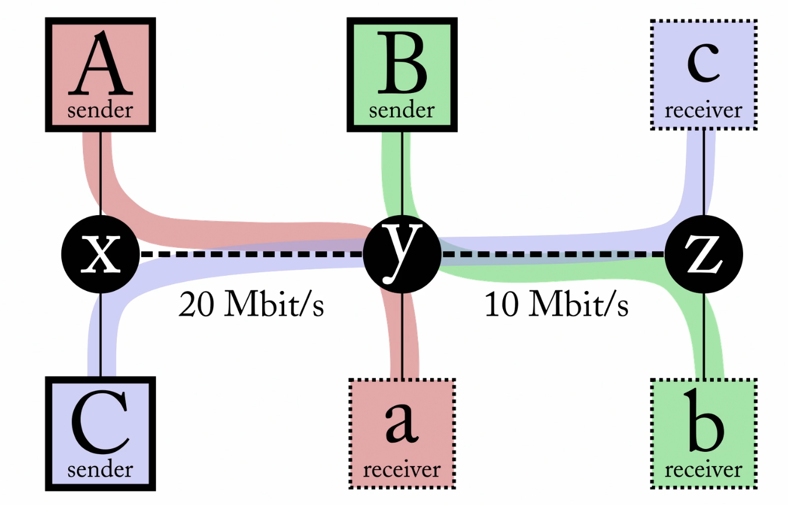
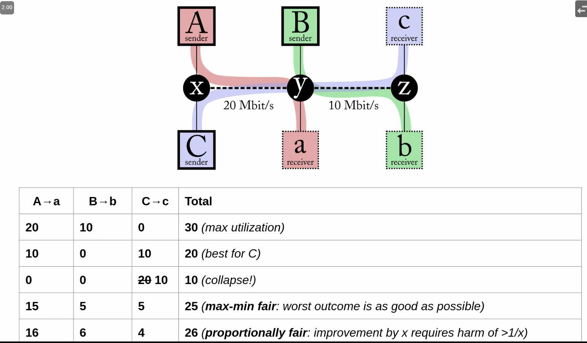
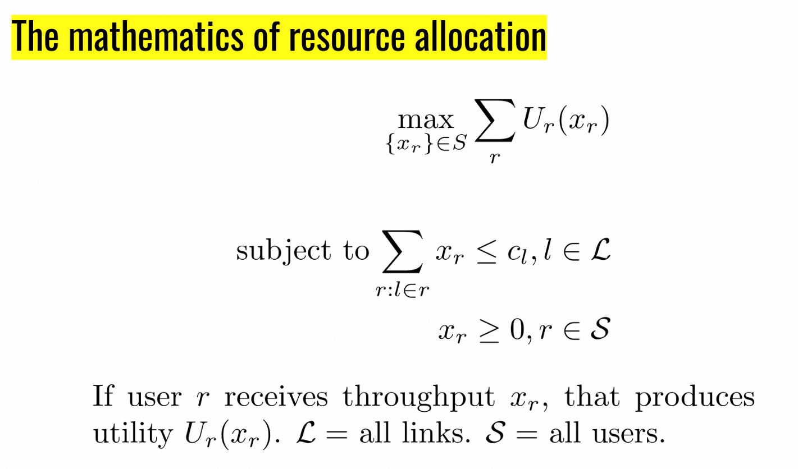
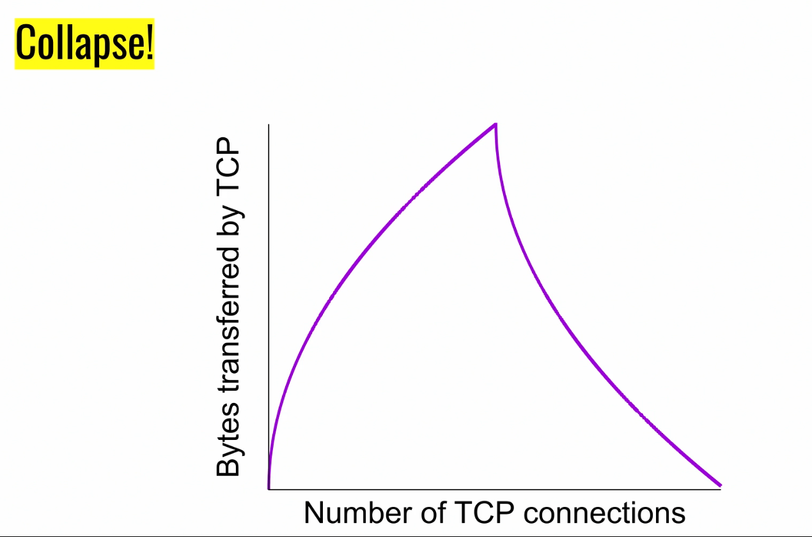
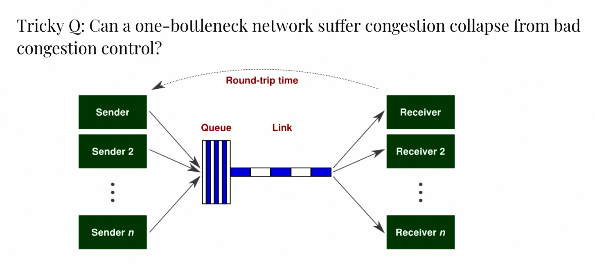
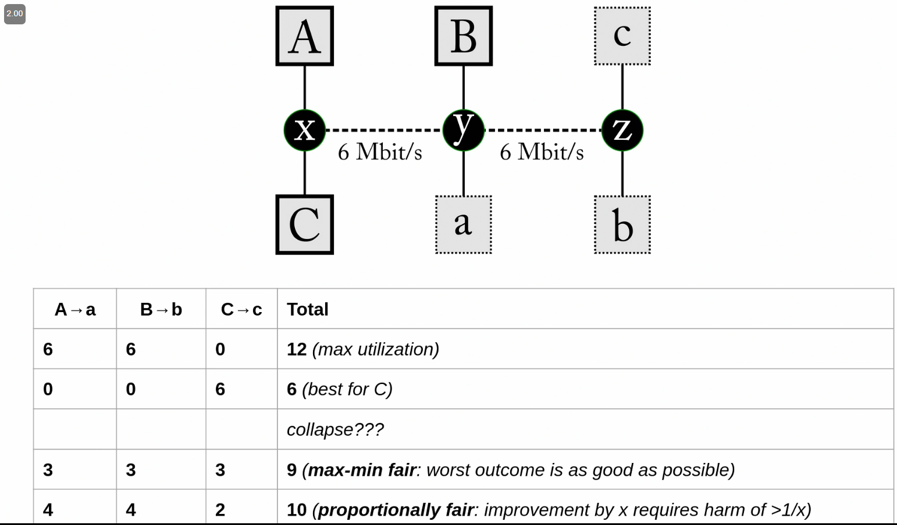
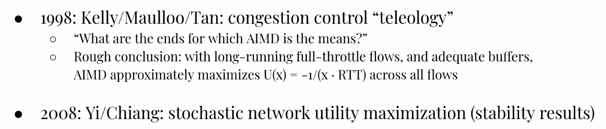
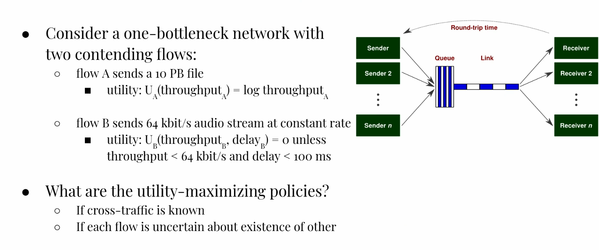
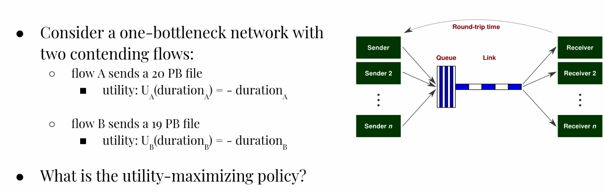

Fairness

What are different ways of assigning throughput?

Mathematics

Alpha Fairness
- We set U(x)=1−αx1−α
- If:
- α=0, we get max utilization
- α→1, we get proportional fairness
- In the limit, thie becomes akin to some log of x
- In this case, as I double my throughput, I get an increase of 1
- If I double my resource allocation, then someone else cannot be worse than halved
- α=2, we get min-potential-delay fairness
- This becoems −1/x
- 1/x is equivalent to time it takes to send a file
- We say we are getting more pain for the longer it takes to send a file
- α→∞, we get max-min fairness
- As the α becomes bigger, it becomes sharper so that any tiny decrease in the bottom is intolerable compared to any increase at the top
- This essentially ensures that our min is as high as possible
- If one person can increase throughput without harming others, this is called a Pareto-improvement
- We will not sacrifice Pareto optimality in any way, that is if we can take a Pareto-improvement, we will
Congestion Collapse

- This occurs if there was work being sent to a receiver that was going to get there anyway
- Because the network is overloaded, the things build up and you get this collapse phenomenon

- We waste work when a receiver receives a packet twice
- Otherwise, we will be chugging through work at a rate C and we will finish everything eventually if the queue is always nonempty
- In a single link, with congestion control, thereis no way we could get a collapse as long as the loss adjudication is correct (which we assume it is, since that's not really about congestion control)
- The key about why we were able to get a collapse in the previous example was because C was using up so much on the first link that is displacing useful work
Another Example

Mathematical Analysis
- We first started implementing TCP with AIMD without really knowing any of the mathematical properties behind it
- Years later, people started doing math and figuring out what kind of rough guarantees this gave us:

- The second bullet point relates to thinking not just about long running flows, but also when you get flows entering and leaving the network randomly
- They were only able to prove results about stability
- Starting in 2013, people started looking at congestion control as an RL problem wher people try to given a utility function, create a policy
Incorporating Delay into Utility

- The utility for flow B should say 1000 instead of 0
- If each flow knows about each other, then:
- A should take up all but 64 kbit / sec
- B should just take that and not try to get more at all
- If they don't know about each other, then:
- A cannot just keep sending until packet drops because then the queue will fill up and we will have bad delays for the other
- This problem becomes very hard once we start caring about delay
- There is a big range of tradeoffs in throughput and delay
More Fairness Models with Duration

- If we do the obviously "fair" thing with all of the previous notions of fairness, we will get half and half split
- If the link rate is 1 PB/s, then this will lead to −40−39=−78
- However, if we just let B go first, we would get −19−39=−58
- We get this weird model where we should just focus on the shortest job first